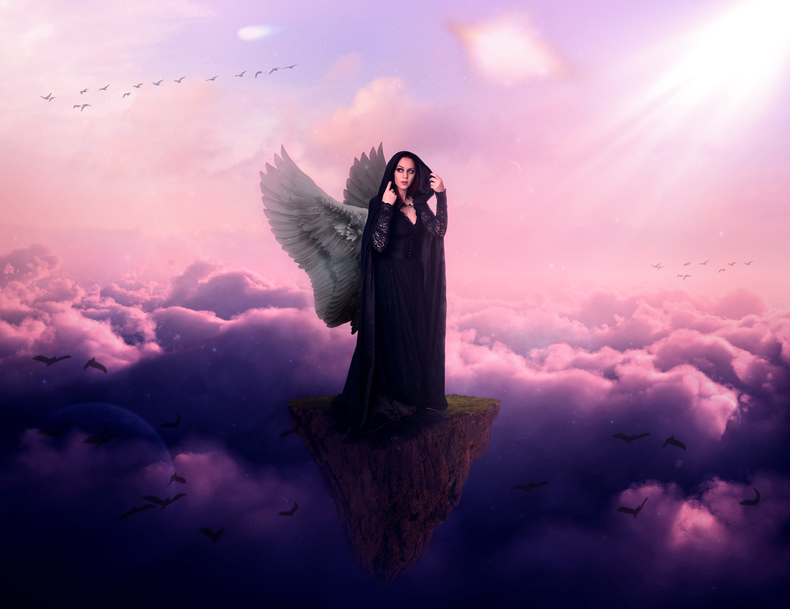
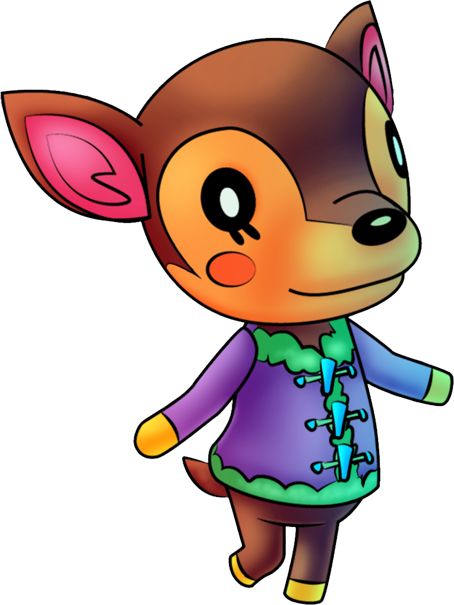
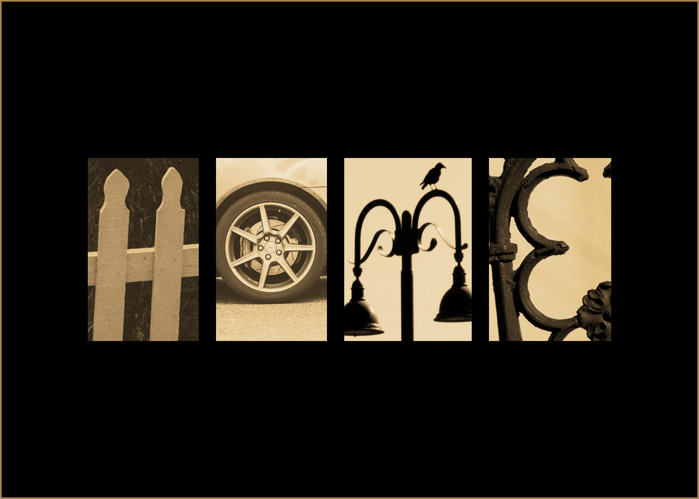

Work Samples





Greetings, my name is Magnus! I'm a Seminole State College student looking to major in digital media. Since taking a digital design class at Oviedo High School, I've become passionate about graphic design. Though I don't have much experience yet, I desire to make even more creative designs in the future. Below you will find my skills, experience, as well as some of the designs I've made in college so far.